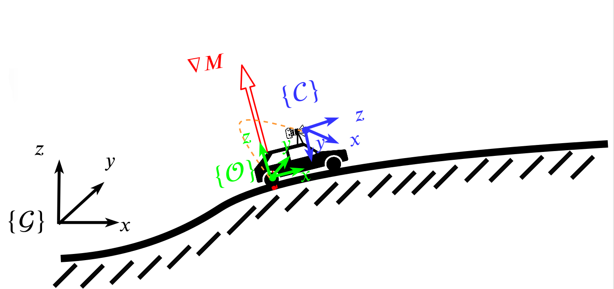
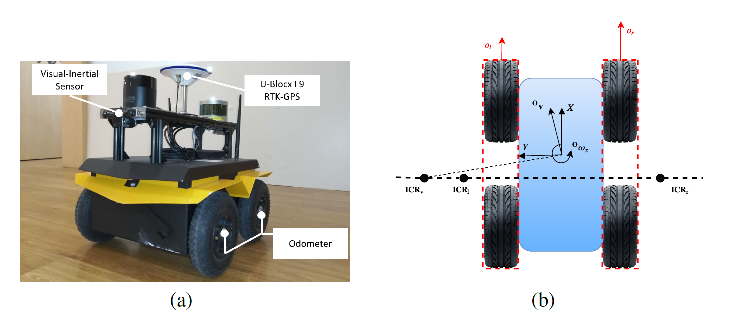
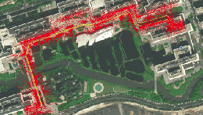
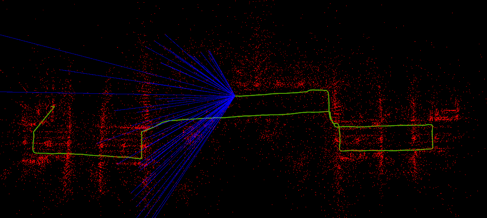
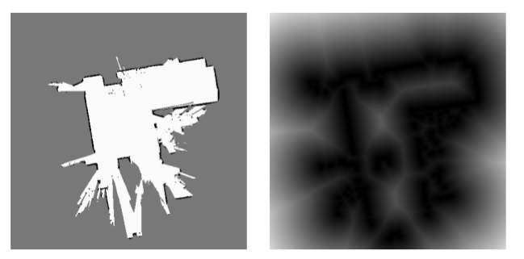
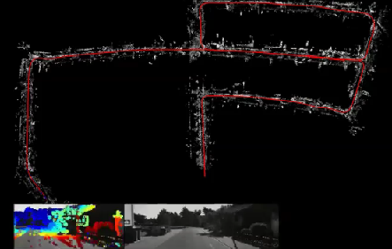

I am currently working in Alibaba A.I. Labs as a senior engineer. Before that, I spent six years in Harbin Institute of Technology, and received my Master degree from State Key Laboratory of Robotics and System in 2016.
My current research is still focusing on robotics as my college life, specifically visual localization for ground vehicles, large scale visual mapping, etc.
Feel free to contact me if you are interested in amazing robotics positions in Alibaba.
github: https://github.com/hitcm
E-mail: mingmingzhang@alibaba-inc.com or robotsming@gmail.com
|  | Localization for Ground Robots: On Manifold Representation, Integration, Re-Parameterization, and Optimization Mingming Zhang, Xingxing Zuo, Yiming Chen and Mingyang Li Arxiv [ pdf] |
|  | Visual-Inertial Localization for Skid-Steering Robots with Kinematic Constraints Xingxing Zuo, Mingming Zhang, Yiming Chen, Yong liu, Guoquan Huang, and Mingyang Li ISRR 2019 [ pdf ] |
|  | Perception System Design for Low-Cost Commercial Ground Robots: Sensor Configurations, Calibration, Localization and Mapping Yiming Chen, Mingming Zhang, Dongsheng Hong, Chengcheng Deng, and Mingyang Li IROS 2019 [ pdf] |
|  | Vision-Aided Localization For Ground Robots Mingming Zhang, Yiming Chen and Mingyang Li IROS 2019 [ pdf, video] |
|  | SDF-Loc: Signed Distance Field based 2D Relocalization and Map Update in Dynamic Environments Mingming Zhang, Yiming Chen and Mingyang Li ACC 2019 [ pdf, video] |
|  | Real-time Stereo Direct Sparse Odometry Without Loop closure Mingming Zhang 2017 [ video] |